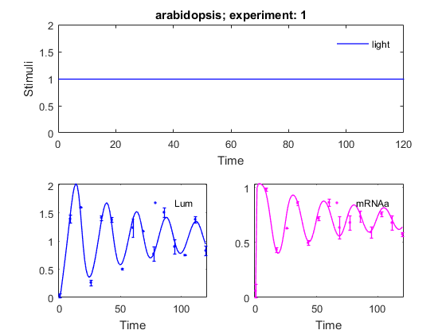
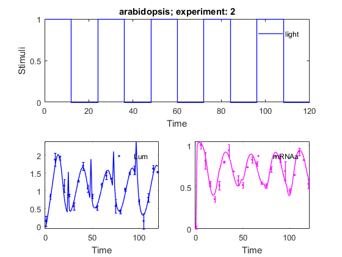
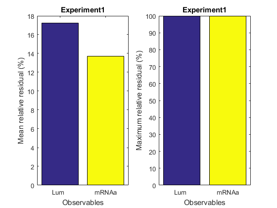
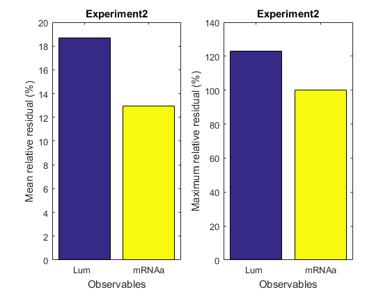
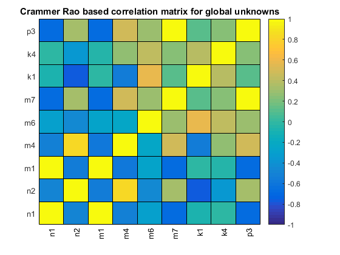
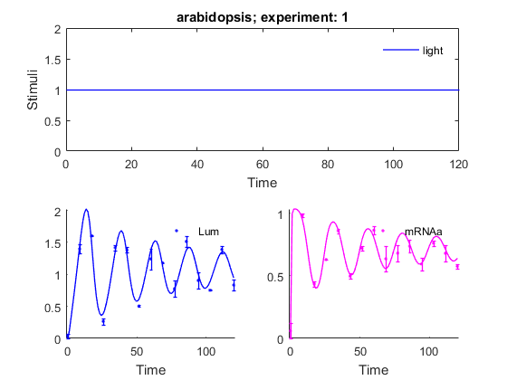
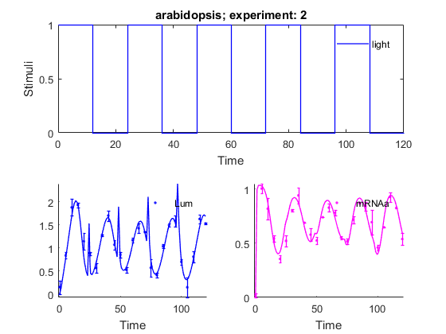
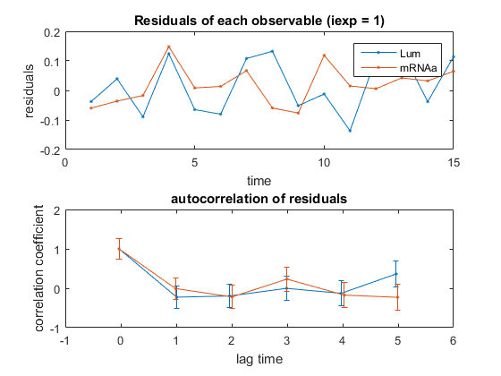
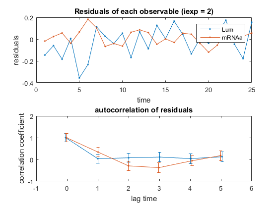
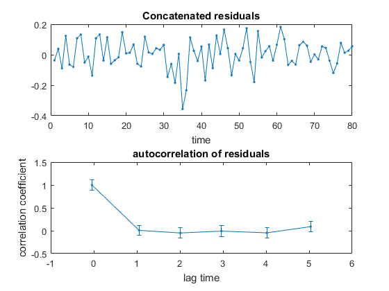

AMIGO_PEPostAnalysis
Contents
Task description
- Performs model unknowns estimation using Tikhonov regularization techniques.
Performts posteriori Analysis of Parameter estimation.
computes the folowing statistical tests and scores for each experiment
separately and for all experiments:
- It incorporates the following tests:
- R2 and adjusted R2.
- Chi^2 fit test of the sum of squared resudials.
- Pearson Chi^2 test of the normality of the residuals (MATLAB Statistics Toolbox required).
- Linear and non-lineas constraints on state variables and parameters.
- (Normalized) Root Mean Square Prediction Error.
- Autocorrelation of the residuals.
- AKAIKE information criteria and corrected AKAIKE criteria.
- Bayesian Information criteria.
Call AMIGO_REG_PE from command line
PEPostAnalysis task will be called after PE or REG_PE as follows:
stats = AMIGO_PEPostAnalysis(PEinputs,PEresults)
PEinputs and PEresults are the inputs and results structures of AMIGO_PE stats is a cell array of structures of the results of the different tests. each cell contains the results related to an experiment, The last cell contains the overall statistics. Alternatives: stats = AMIGO_PEPostAnalysis(PEinputs, PEresults,verbose) verbose == 0 will minimize the text written to the console and plottings stats = AMIGO_PEPostAnalysis(PEinputs, PEresults,verbose,plotflag) plotflag == 0 will not generate plots.
Example
% TITLE: The circadian clock in Arabidopsis thaliana

%============================ % RESULTS PATHS RELATED DATA %============================ inputs.pathd.results_folder='arabidopsis'; % Folder to keep results (in Results\) inputs.pathd.short_name='arabidopsis'; % Label to identify figures and reports %============================ % MODEL DEFINITION %============================ inputs.model.input_model_type='charmodelC'; % Model type- C inputs.model.n_st=7; % Number of states inputs.model.n_par=27; % Number of parameters inputs.model.n_stimulus=1; % Number of stimuli inputs.model.st_names=char('CL_m','CL_c',...% Names of the states 'CL_n','CT_m','CT_c','CT_n','CP_n'); inputs.model.par_names=char('n1','n2','g1','g2','m1','m2','m3','m4','m5','m6',... 'm7','k1','k2','k3','k4','k5','k6','k7','p1','p2',... 'p3','r1','r2','r3','r4','q1','q2'); % Names of the parameters inputs.model.stimulus_names=char('light'); % Names of the stimuli inputs.model.eqns=... % Model equations char('dCL_m=q1*CP_n*light+n1*CT_n/(g1+CT_n)-m1*CL_m/(k1+CL_m)',... 'dCL_c=p1*CL_m-r1*CL_c+r2*CL_n-m2*CL_c/(k2+CL_c)',... 'dCL_n=r1*CL_c-r2*CL_n-m3*CL_n/(k3+CL_n)',... 'dCT_m=n2*g2^2/(g2^2+CL_n^2)-m4*CT_m/(k4+CT_m)',... 'dCT_c=p2*CT_m-r3*CT_c+r4*CT_n-m5*CT_c/(k5+CT_c)',... 'dCT_n=r3*CT_c-r4*CT_n-m6*CT_n/(k6+CT_n)',... 'dCP_n=(1-light)*p3-m7*CP_n/(k7+CP_n)-q2*light*CP_n');
IMPORTANT:
User may select any customised name but: n, t, u, y, ydot, par, tlast, told, pend and v which are reserved words
inputs.model.par=[7.5038 0.6801 1.4992 3.0412 10.0982... % Nominal parameter 1.9685 3.7511 2.3422 7.2482 1.8981 1.2 3.8045... % values 5.3087 4.1946 2.5356 1.4420 4.8600 1.2 2.1994... 9.4440 0.5 0.2817 0.7676 0.4364 7.3021 4.5703 1.0]; %============================================ % EXPERIMENTAL SCHEME (SIMULATION CONDITIONS) %============================================ inputs.exps.n_exp=2; % Number of experiments % EXPERIMENT 1 inputs.exps.exp_y0{1}=[0 0 0 0 0 0 0]; % Initial conditions inputs.exps.t_f{1}=120; % Experiments duration inputs.exps.n_obs{1}=2; % Number of observables inputs.exps.obs_names{1}=char('Lum','mRNAa'); % Names of the observables inputs.exps.obs{1}=char('Lum=CL_m',... % Observation function 'mRNAa=CT_m'); inputs.exps.u_interp{1}='sustained'; % Stimuli definition for experiment 1 inputs.exps.t_con{1}=[0 120]; % Input swithching times including: % Initial and final time inputs.exps.u{1}=1; % Values of the inputs for exp 1 inputs.exps.n_s{1}=15; % Number of sampling times % EXPERIMENT 2 inputs.exps.exp_y0{2}=[0 0 0 0 0 0 0]; % Initial conditions inputs.exps.t_f{2}=120; % Experiments duration inputs.exps.n_obs{2}=2; % Number of observables inputs.exps.obs_names{2}=char('Lum','mRNAa'); % Names of the observables inputs.exps.obs{2}=char('Lum=CL_m',... % Observation function 'mRNAa=CT_m'); inputs.exps.u_interp{2}='pulse-down'; % Stimuli definition for experiment 2 inputs.exps.n_pulses{2}=5; % Number of pulses inputs.exps.u_min{2}=0; % Minimum and maximum of inputs inputs.exps.u_max{2}=1; inputs.exps.t_con{2}=0:12:120; % Input switching times inputs.exps.n_s{2}=25; % Number of sampling times %================================== % EXPERIMENTAL DATA RELATED INFO %================================== % EXPERIMENT 1 inputs.exps.data_type='real'; % Type of data inputs.exps.exp_data{1}=[ % Matrix of ns{iexp} x n_obs{iexp} 0.037642 0.059832 % with experimental data 1.398618 0.983442 1.606762 0.433379 0.265345 0.628819 1.417288 0.858973 1.381613 0.496637 0.504584 0.717923 1.240249 0.862584 1.180193 0.634508 0.775945 0.679648 1.514514 0.735783 0.904653 0.593644 0.753736 0.759013 1.389312 0.678665 0.833228 0.574736 ]; inputs.exps.error_data{1}=[ % Matrix of ns{iexp} x n_obs{iexp} 0.037642 0.059832 % with experimental error 0.072461 0.013999 0.002877 0.020809 0.050324 0.002705 0.042936 0.017832 0.044338 0.022538 0.016335 0.017981 0.164745 0.035301 0.010631 0.102381 0.127745 0.065791 0.081671 0.049568 0.126739 0.050306 0.006308 0.018894 0.054665 0.066953 0.082163 0.015295 ]; % EXPERIMENT 2 inputs.exps.exp_data{2}=[ 0.146016 0.018152 0.831813 1.002499 1.874870 0.816779 1.927580 0.544111 1.139536 0.354476 0.876938 0.520424 0.559600 0.802322 1.273548 0.939453 1.696482 0.687495 1.065496 0.577896 0.847460 0.524076 0.517520 0.738095 1.162232 0.826737 1.421504 0.779833 1.340639 0.550493 0.563822 0.515605 0.402755 0.714877 1.029856 0.871118 1.490741 0.840174 1.580873 0.692047 0.696610 0.459481 0.141546 0.646803 0.804194 0.925806 1.622378 0.824711 1.525194 0.537398 ]; inputs.exps.error_data{2}=[ 0.146016 0.018152 0.066547 0.045194 0.184009 0.101495 0.047431 0.030858 0.175280 0.033712 0.031945 0.048733 0.107148 0.008715 0.019847 0.072804 0.111892 0.001840 0.104932 0.058752 0.059721 0.033324 0.056537 0.000360 0.051815 0.037473 0.103393 0.028094 0.008084 0.012024 0.188444 0.022982 0.046354 0.031981 0.043436 0.003749 0.030177 0.042560 0.116245 0.110535 0.059345 0.025112 0.218587 0.000564 0.115783 0.043708 0.099239 0.002678 0.010644 0.052990 ]; %================================== % UNKNOWNS RELATED DATA %================================== % Select the GLOBAL parameters/initial conditions to be considered by PE inputs.PEsol.id_global_theta=char('n1','n2','m1','m4','m6','m7','k1','k4','p3'); % 'all'|User selected % In order to use AMIGO_PE you need to specify upper and lower % bounds on the parameters. An initial guess is optional. inputs.PEsol.global_theta_max=20.*ones(1,9); inputs.PEsol.global_theta_min=0.01.*ones(1,9); %============================================================= % COST FUNCTION RELATED DATA % SOLVING THE PROBLEM WITH WEIGHTED LEAST SQUARES FUNCTION %============================================================= inputs.PEsol.PEcost_type='lsq'; % 'lsq' (weighted least squares default) inputs.PEsol.lsq_type='Q_I'; % Weights: % Q_I: identity matrix; Q_expmax: maximum experimental data % Q_expmean: mean experimental data; % Q_mat: user selected weighting matrix %================================== % NUMERICAL METHDOS RELATED DATA %================================== % SIMULATION % Default for charmodel C: CVODES % OPTIMIZATION inputs.nlpsol.nlpsolver='local_nl2sol'; % In this case the problem will be solved with % a local non linear least squares % method.
More information regarding the inputs used in this example can be found here.
%==================================================== % CALL AMIGO2 from COMMAND LINE - LEAST SQUARES CASE %==================================================== % It is recommended to keep all inputs in a 'problem_file'.m. % AMIGO2 PE task can be called as follows: % AMIGO_PE('problem_file','run_ident') or AMIGO_PE(inputs) AMIGO_Prep(inputs); [PEresults]=AMIGO_PE(inputs); %==================================================== % CALL AMIGO2 from COMMAND LINE - POST ANALYSIS %==================================================== PEinputs=inputs; verbose=1; plotflag=1; stats = AMIGO_PEPostAnalysis(PEinputs,PEresults,verbose,plotflag)
***********************************
AMIGO2, Copyright @CSIC
AMIGO2_R2016a [Oct 2015]
***********************************
*Date: 07-Apr-2016
------>Pre processing....this may take a few seconds.
------>Checking inputs....
------> WARNING message
AMIGO_check_model: You did not specify inputs.model.exe_type, standard will be assumed
Warning: AMIGO_check_IVPsolver: Changing ivp solver to the only option
compatible with charmodelC, cvodes
Warning: AMIGO_check_IVPsolver: Changing sensitivities solver to, cvodes
------> Generating C code ...
------> Mexing files....
Building with 'MinGW64 Compiler (C)'.
D:\AMIGO2_REPO_2014\AMIGO2R2016\Kernel\IVP_solvers\cvodes\C_src4Amigo\src\src_amigo\simulate_amigo_model.c: In function 'simulate_amigo_model':
D:\AMIGO2_REPO_2014\AMIGO2R2016\Kernel\IVP_solvers\cvodes\C_src4Amigo\src\src_amigo\simulate_amigo_model.c:331:16: warning: passing argument 1 of 'mexPrintf' from incompatible pointer type
mexPrintf(stderr,"\nSolver failed at flag = CVode(cvode_mem, tout, y, &t, CV_TSTOP_RETURN);. . .\n");
^
In file included from D:\AMIGO2_REPO_2014\AMIGO2R2016\Kernel\IVP_solvers\cvodes\C_src4Amigo\include\include_amigo/simulate_amigo_model.h:4:0,
from D:\AMIGO2_REPO_2014\AMIGO2R2016\Kernel\IVP_solvers\cvodes\C_src4Amigo\src\src_amigo\simulate_amigo_model.c:1:
C:\MATLAB_R2015b_64/extern/include/mex.h:202:27: note: expected 'const char *' but argument is of type 'struct FILE *'
LIBMWMEX_API_EXTERN_C int mexPrintf(
^
D:\AMIGO2_REPO_2014\AMIGO2R2016\Kernel\IVP_solvers\cvodes\C_src4Amigo\src\src_interface\interface_with_matlab.c: In function 'mexFunction':
D:\AMIGO2_REPO_2014\AMIGO2R2016\Kernel\IVP_solvers\cvodes\C_src4Amigo\src\src_interface\interface_with_matlab.c:200:17: warning: assignment from incompatible pointer type
stats_struct = mxGetPr(plhs[5]);
^
MEX completed successfully.
------>Files generated....
***********************************
AMIGO2, Copyright @CSIC
AMIGO2_R2016a [Oct 2015]
***********************************
*Date: 07-Apr-2016
------>Checking inputs....
------> WARNING message
AMIGO_check_model: You did not specify inputs.model.exe_type, standard will be assumed
Warning: AMIGO_check_IVPsolver: Changing ivp solver to the only option
compatible with charmodelC, cvodes
Warning: AMIGO_check_IVPsolver: Changing sensitivities solver to, cvodes
------> WARNING message
You have not provided the sampling times.
Equidistant sampling will be assumed for experiment 1
Note however that you may modify your input file by adding
inputs.exps.t_s{iexp}
------> WARNING message
You have not provided the sampling times.
Equidistant sampling will be assumed for experiment 2
Note however that you may modify your input file by adding
inputs.exps.t_s{iexp}
Warning: Directory access failure:
D:\AMIGO2_REPO_2014\AMIGO2R2016\Results\arabidopsis\AMIGO_gen_obs_arabidopsis.m
ans =
D:\AMIGO2_REPO_2014\AMIGO2R2016\Results\arabidopsis\AMIGO_gen_obs_arabidopsis.m
*************************************************************************
------>IMPORTANT!!: Most of the optimization solvers have their own
tunning parameters (options).
Defaults have been assigned in the *NLPsolver*_options
files. You may need to modify those settings for your
particular problem, specially:
- maximum number of function evaluations /iterations,
- maximum computational time
******************************************************************
Solving the NLP problem with Local Optimizer: nl2sol
Summary of selected local solver (nl2sol) options:
maxeval: 500,
maxtime: 60
>Bounds on the unknowns:
v_guess(1)=10.005000; v_min(1)=0.010000; v_max(1)=20.000000;
v_guess(2)=10.005000; v_min(2)=0.010000; v_max(2)=20.000000;
v_guess(3)=10.005000; v_min(3)=0.010000; v_max(3)=20.000000;
v_guess(4)=10.005000; v_min(4)=0.010000; v_max(4)=20.000000;
v_guess(5)=10.005000; v_min(5)=0.010000; v_max(5)=20.000000;
v_guess(6)=10.005000; v_min(6)=0.010000; v_max(6)=20.000000;
v_guess(7)=10.005000; v_min(7)=0.010000; v_max(7)=20.000000;
v_guess(8)=10.005000; v_min(8)=0.010000; v_max(8)=20.000000;
v_guess(9)=10.005000; v_min(9)=0.010000; v_max(9)=20.000000;
-----------------------------------------------
Initial value problem related active settings
-----------------------------------------------
ivpsolver: cvodes
RelTol: 1e-05
AbsTol: 1e-07
MaxStepSize: Inf
MaxNumberOfSteps: 1e+06
------------------------------------------------------------------
This is DN2FB (NL2SNO v2.3)
Authors: John Dennis, David Gay, Roy Welsch
MEX Interface J. Currie 2012
Problem Properties:
# Decision Variables: 9
# Data Points: 80
------------------------------------------------------------------
*** TERMINATION: EARLY EXIT ***
*** CAUSE: singular convergence. the hessian near the current iterate appears to be singular or nearly so. ***
------------------------------------------------------------------
NL2SOL ended after 45 iteration and 483 function evaluation:
Results: Singular convergence
Cost function: 0.765166
Optimal solution:
ans =
8.2060
3.1833
5.9537
16.7781
0.0431
12.5200
0.7573
4.4185
8.4470
------> Computing Correlation Matrix for unknowns...
---------------------------------------------------
Local sensitivity problem related active settings
---------------------------------------------------
senssolver: cvodes
ivp_RelTol: 1e-05
ivp_AbsTol: 1e-07
sens_RelTol: ~1e-05
sensmex: cvodesg_arabidopsis
MaxStepSize: Inf
MaxNumberOfSteps: 1e+06
sens_RelTol: ~1e-05
--------------------------------------------------------------------------
Experiment 1:
inputs.exp_data{1}=[
0.037642 0.059832
1.39862 0.983442
1.60676 0.433379
0.265345 0.628819
1.41729 0.858973
1.38161 0.496637
0.504584 0.717923
1.24025 0.862584
1.18019 0.634508
0.775945 0.679648
1.51451 0.735783
0.904653 0.593644
0.753736 0.759013
1.38931 0.678665
0.833228 0.574736
];
Experiment 2:
inputs.exp_data{2}=[
0.146016 0.018152
0.831813 1.0025
1.87487 0.816779
1.92758 0.544111
1.13954 0.354476
0.876938 0.520424
0.5596 0.802322
1.27355 0.939453
1.69648 0.687495
1.0655 0.577896
0.84746 0.524076
0.51752 0.738095
1.16223 0.826737
1.4215 0.779833
1.34064 0.550493
0.563822 0.515605
0.402755 0.714877
1.02986 0.871118
1.49074 0.840174
1.58087 0.692047
0.69661 0.459481
0.141546 0.646803
0.804194 0.925806
1.62238 0.824711
1.52519 0.537398
];
---------------------------------------------------------------------------------------------
>>>> Mean / Maximum value of the residuals in percentage (100*(data-model)/data):
Experiment 1 :
Observable 1 --> mean error: 17.256389 % max error: 100.000000 %
Observable 2 --> mean error: 13.685422 % max error: 100.000000 %
Experiment 2 :
Observable 1 --> mean error: 18.663521 % max error: 122.822464 %
Observable 2 --> mean error: 12.955446 % max error: 100.000000 %
--------------------------------------------------------------------------
--------------------------------------------------------------------
>>>> Maximum absolute value of the residuals (data-model):
Experiment 1 :
Observable 1 --> max residual: 0.136427 max data: 1.606762
Observable 2 --> max residual: 0.147925 max data: 0.983442
Experiment 2 :
Observable 1 --> max residual: 0.356202 max data: 1.927580
Observable 2 --> max residual: 0.182470 max data: 1.002499
--------------------------------------------------------------------------
>>>> Best objective function: 0.765166
>>>> Computational cost: 2.652017 s
> 100.00% of successful simulationn
> 100.00% of successful sensitivity calculations
>>> Best values found and the corresponding asymptotic confidence intervals
>>> Estimated global parameters:
n1 : 8.2060e+00 +- 5.8926e+00 ( 71.8%);
n2 : 3.1833e+00 +- 5.9486e+00 ( 187%);
m1 : 5.9537e+00 +- 4.3878e+00 ( 73.7%);
m4 : 1.6778e+01 +- 3.0266e+01 ( 180%);
m6 : 4.3079e-02 +- 1.8272e+00 (4.24e+03%);
m7 : 1.2520e+01 +- 5.3378e+01 ( 426%);
k1 : 7.5731e-01 +- 3.6982e-01 ( 48.8%);
k4 : 4.4185e+00 +- 5.8711e+00 ( 133%);
p3 : 8.4470e+00 +- 4.2126e+01 ( 499%);
>>> Correlation matrix for the global unknowns:
1.000000e+00 -4.908963e-01 9.938373e-01 -5.110324e-01 -2.940585e-01 -6.707976e-01 -8.656254e-02 -3.222711e-03 -6.565636e-01
-4.908963e-01 1.000000e+00 -5.369913e-01 8.142200e-01 -4.478993e-01 3.252007e-01 -7.804815e-01 -3.537419e-01 3.128508e-01
9.938373e-01 -5.369913e-01 1.000000e+00 -5.871577e-01 -2.666345e-01 -6.776515e-01 -1.718202e-02 -4.866362e-02 -6.632013e-01
-5.110324e-01 8.142200e-01 -5.871577e-01 1.000000e+00 -2.232063e-01 4.845097e-01 -5.616894e-01 2.545652e-01 4.750692e-01
-2.940585e-01 -4.478993e-01 -2.666345e-01 -2.232063e-01 1.000000e+00 2.921386e-01 5.676127e-01 4.069430e-01 2.935695e-01
-6.707976e-01 3.252007e-01 -6.776515e-01 4.845097e-01 2.921386e-01 1.000000e+00 1.120337e-01 2.395876e-01 9.997827e-01
-8.656254e-02 -7.804815e-01 -1.718202e-02 -5.616894e-01 5.676127e-01 1.120337e-01 1.000000e+00 3.910223e-01 1.180010e-01
-3.222711e-03 -3.537419e-01 -4.866362e-02 2.545652e-01 4.069430e-01 2.395876e-01 3.910223e-01 1.000000e+00 2.450236e-01
-6.565636e-01 3.128508e-01 -6.632013e-01 4.750692e-01 2.935695e-01 9.997827e-01 1.180010e-01 2.450236e-01 1.000000e+00
------>Plotting results....
Sorry, convergence curve plot is not available for local solvers, at the moment
Warning: File 'ess_report.mat' not found.
<strong>
------>Results (report and struct_results.mat) and plots were kept in the directory:
</strong><strong>D:\AMIGO2_REPO_2014\AMIGO2R2016\Results\arabidopsis\PE_arabidopsis_local_nl2sol_run1</strong>
Click <a href="matlab: cd('D:\AMIGO2_REPO_2014\AMIGO2R2016\Results\arabidopsis\PE_arabidopsis_local_nl2sol_run1')">here</a> to go to the results folder or <a href="matlab: load('D:\AMIGO2_REPO_2014\AMIGO2R2016\Results\arabidopsis\PE_arabidopsis_local_nl2sol_run1\strreport_arabidopsis_run1.mat')">here</a> to load the results.
----- Posteriory Analysis for Parameter Estimation --------------
***************************
******* EXPERIMENT 1 *****
***************************
The residuals are standardized by the standard deviation: R(i,j)/std_dev(i,j)
--> Statistics toolbox license is not detected. Part of the analysis is skipped.
********************************************
**** TEST 2: R-squared goodness of fit ***
********************************************
Compares the user's model to the simple mean of the data
R2 ~ 1 => the model is much better than using the simple mean of the data;
R2 << 1 => the simple mean explains the observations better than the model.
Test result:
--> R-squared value (1-squared_model_residuals/squared_mean_residuals): 0.949724
********************************************
**** TEST 3: Chi-square goodness of fit ***
********************************************
We test the sum of squared residuals as presented in Press et. al. 2007.
The assumption is that, the residuals are normally distributed, thus the
sum of the squared residuals normalized by the standard deviation (Chi2_obs)
must follow the Chi-2 distribution. The resulted p-value tells you the
probability that a random variable from a Chi2 distribution
with the given degree-of-freedom exceeds the Chi2_obs value.
Where the DOF = (number of data) - (number of estimated parameters)
If the probability is less than 0.01, we reject the hypothesis.
Test result:
--> the null-hypothesis was REJECTED. p = 0 < alpha = 0.01
Test details:
number of datapoints: 30
chi2 (Res_norm'*Res_norm) value: 4548.51
degrees of freedom: 21
p-value: 0
significance level: 0.01
***************************
******* EXPERIMENT 2 *****
***************************
The residuals are standardized by the standard deviation: R(i,j)/std_dev(i,j)
--> Statistics toolbox license is not detected. Part of the analysis is skipped.
********************************************
**** TEST 2: R-squared goodness of fit ***
********************************************
Compares the user's model to the simple mean of the data
R2 ~ 1 => the model is much better than using the simple mean of the data;
R2 << 1 => the simple mean explains the observations better than the model.
Test result:
--> R-squared value (1-squared_model_residuals/squared_mean_residuals): 0.923246
********************************************
**** TEST 3: Chi-square goodness of fit ***
********************************************
We test the sum of squared residuals as presented in Press et. al. 2007.
The assumption is that, the residuals are normally distributed, thus the
sum of the squared residuals normalized by the standard deviation (Chi2_obs)
must follow the Chi-2 distribution. The resulted p-value tells you the
probability that a random variable from a Chi2 distribution
with the given degree-of-freedom exceeds the Chi2_obs value.
Where the DOF = (number of data) - (number of estimated parameters)
If the probability is less than 0.01, we reject the hypothesis.
Test result:
--> the null-hypothesis was REJECTED. p = 0 < alpha = 0.01
Test details:
number of datapoints: 50
chi2 (Res_norm'*Res_norm) value: 76395.7
degrees of freedom: 41
p-value: 0
significance level: 0.01
***************************
******* EXPERIMENT 1-2 *****
***************************
--> Statistics toolbox license is not detected. Part of the analysis is skipped.
********************************************
**** TEST 2: R-squared goodness of fit ***
********************************************
Compares the user's model to the simple mean of the data
R2 ~ 1 => the model is much better than using the simple mean of the data;
R2 << 1 => the simple mean explains the observations better than the model.
Test result:
--> R-squared value (1-squared_model_residuals/squared_mean_residuals): 0.932302
********************************************
**** TEST 3: Chi-square goodness of fit ***
********************************************
We test the sum of squared residuals as presented in Press et. al. 2007.
The assumption is that, the residuals are normally distributed, thus the
sum of the squared residuals normalized by the standard deviation (Chi2_obs)
must follow the Chi-2 distribution. The resulted p-value tells you the
probability that a random variable from a Chi2 distribution
with the given degree-of-freedom exceeds the Chi2_obs value.
Where the DOF = (number of data) - (number of estimated parameters)
If the probability is less than 0.01, we reject the hypothesis.
Test result:
--> the null-hypothesis was REJECTED. p = 0 < alpha = 0.01
Test details:
number of datapoints: 80
chi2 (Res_norm'*Res_norm) value: 80944.2
degrees of freedom: 71
p-value: 0
significance level: 0.01
WARNING: The AKAIKE information and Bayesian information are originally for maximum likelihood estimation problems
*************************************
**** AKAIKE Information Criteria ***
***************************************
The Akaike information criterion (AIC) is a measure of the
relative quality of a statistical model, for a given set of data.
As such, AIC provides a means for model selection.
AIC = 2*npar + 2*Chi2
corrAIC = AIC + 2*npar*(npar+1)/(ndata - npar-1)
aic = 80962.2
corr_aic = 80964.8
*************************************
**** Bayesian Information Criteria ***
***************************************
In statistics, the Bayesian information criterion (BIC) or Schwarz
criterion (also SBC, SBIC) is a criterion for model selection among a finite set of models
BIC = Chi^2 + npar*log(ndata)
BIC = 80983.6
stats =
1x3 struct array with fields:
name
Pearson_chi2
R2
Press_chi2gof
RMSE
NRMSE
ndata
npars
residuals
normalized_residuals
data
level_of_significance
RSS
Chi2
AutoCorr
AkaikeInformationCrit
BayesianInformationCrit
          See also
References
Model was taken from:
Locke J.C.W; A.J. Millar; M.S. Turner. Modelling genetic networks with noisy and varied experimental data: the circadian clock in Arabidopsis thaliana. J Theor Biol,2005, 234:383-393.
AMIGO_htmldoc_inputs(inputs,fullfile(pwd,'html','parestpost.html'));